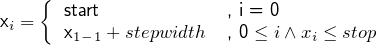

Motors are devices where you can read from (determine its position/temperature) or write to (e.g. move its axis or alter its temperature in case of a radiator). They contain at least one axis.
A motor axis usually has different modes (called step functions) it can be controlled with:
| Step Function | Number | Date | absolute | relative |
|---|---|---|---|---|
| Add | ||||
| Multiply | ||||
| File/Positionlist |
In the Add mode the motor axis is controlled by a given quadruple (start, stop, stepwidth, stepcount). The fourth value is calculated out of the other three (rounded up to next Integer):
start = stop - (stepwidth · stepcount)
After moving to its start position it will drive to stepcount equally spaced positions, defined by stepwidth until reaching the stop position. Each position is calculated as follows:

The above mode treats each value as absolute. If they are treated relative the next position is calculated relative to the current motor position mPos:
Given: Start=1, Stop=10, Stepwidth=1 (absolute) ⇒ Stepcount = 9
Motor positions: (1, 2, 3, 4, 5, 6, 7, 8, 9, 10)
Given: Start=1, Stop=10, Stepwidth=2 (absolute) ⇒ Stepcount = 5
Motor positions: (1, 3, 5, 7, 9, 10)
Note: The last position (Stop) is always actuated (disregarding the possible shorter stepwidth).
Given: Start=1, Stop=10, Stepwidth=1, mPos=5 (relative) ⇒ Stepcount = 9
Motor positions: (6, 7, 8, 9, 10, 11, 12, 13, 14, 15)
There’s a specific (pseudo-)motor called „date timer” allowing to define a time span with discrete points imitating motor positions.
The Multiply mode is also controlled by a given quadruple (start, stop, stepwidth, stepcount) but it differs in the way positions are calculated. The motor positions result by taking the sequence generated by the quadruple as multiplication factors of the initial motor position.
Since its calculation is based on the current motor position the Multiply mode is always relative.
Given: Start=1, Stop=5, Stepwidth=1, mPos=2 (relative) ⇒ Stepcount = 4
Motor positions: (2 · 1, 2 · 2, 2 · 3, 2 · 4, 2 · 5) = (2, 4, 6, 8, 10)
Given: Start=1, Stop=10, Stepwidth=2, mPos=2 (relative) ⇒ Stepcount = 5
Motor positions: (2 · 1, 2 · 3, 2 · 5, 2 · 7, 2 · 9, 2 · 10) = (2, 6, 10, 14, 18, 20)
The File and Positionlist mode behaves like the Add (Number) mode except that the motor positions are taken from the given file/list instead of calculated by a quadruple. This enables the option to use positions that are not equidistant.
Given: a list of values „1, 3, 7, 4, 17” (absolute)
Motor positions: (1, 3, 7, 4, 17)
Given: a list of values „3, 1, -7, 35, 14” (relative), mPos=3
Motor positions: (6, 7, 0, 35, 49)